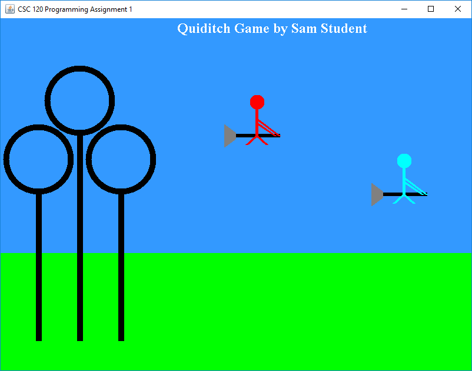
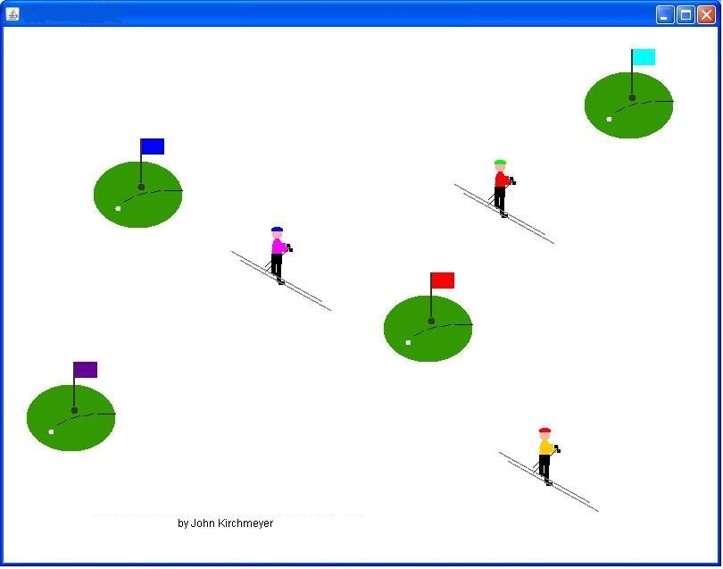
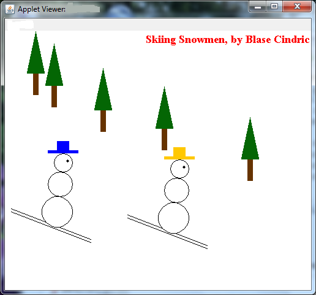
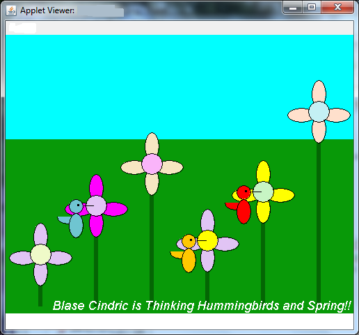

Develop a Java Application program that draws a visual scene in the graphical output window. Your application must declare, instantiate and draw at least two (2) objects from each of two (2) different classes that represent visual objects (in other words, the classes must have adrawmethod that can be called from theMUPanelclass). The two classes must draw two different-looking things on the screen, and each object must be drawn in a different screen location. Additionally, the student's name must be displayed somewhere in the output window using thedrawStringmethod of theGraphicsclass. Details of this assignment appear below.
In effect, this assignment is quite similar to the Boat lab that we've worked on recently; with the requirement that two different-looking classes are written by the student, and at least two objects from each of the classes is drawn on the screen.
Here are several examples of program output that meets the requirements for the assignment. Click on an image to see a larger version.
 
 
Create an application called PA1
(no
spaces in the name, so PA1,
not PA 1). It should
have the classes MUPanel, ThingOne and ThingTwo
in
the files MUPanel.java, ThingOne.java
and ThingTwo.java,
respectively. To get started, you can use the MUPanel.java file
from previous labs you've worked on in Java (Lab1, for example), and you should
right-click on the following two links and save the files in the src folder
of your PA1 project:
Note: you should change the names ThingOne and ThingTwo to
names that are more meaningful for your project. As an example, good names for the classes used in
Example Two shown at the end of this
assignment description would be Hummingbird and Flower.
You may NOT use a class that has been used in previous labs or class examples for this assignment. So you may not have Balloons, Flags, SmileySuns, LollipopTrees, Boats, etc. You are to make up your own visual objects and develop class definitions for your items.
In the MUPanel class, you must DECLARE two or
more private objects of type ThingOne, and also
DECLARE two or more objects of
type ThingTwo. As an illustration, the program that produced the
Skiing Snowmen sample above declares five (5) objects from a ThingOne class that draws
a Pine Tree, and two (2) objects
from a ThingTwo class that draws a Snowman.
INSTANTIATE all of these objects inside the MUPanel constructor
method.
In the paintComponent method of the MUPanel
class, each
of the objects should be "asked" to draw themselves, by calling
each object's draw method.
In the paintComponent method, use the g.drawString
method to draw a text string somewhere in the output window with a
message that includes your name. Examine the samples shown above to
see how this can be done, and what might be acceptable.
The ThingOne and ThingTwo classes that will represent the
visual things in the
scene MUST each
have data members of
type Integer called anchorX and anchorY.
They
may
have
other data members, too, representing different sizes, colors or other
aspects of the individual
objects. In the starter files that are given with this assignment,
the ThingOne class has six data members (some of which you might not use) that are
given to you as an example, and the ThingTwo class has no data members given
to you. In the Skiing Snowmen sample above, the Snowman class has a hatColor
data member of type Color, in addition to anchorX
and anchorY.
IMPORTANT: remember that anything that will be different from object to object must be represented by a property in the class definition for the object. For example, the PineTree class in that the Skiing Snowmen sample would only need anchorX and anchorY, because all of the Pine Trees are the same color, shape and size. The Flower class in the Hummingbird sample above would need 5 properties (anchorX, anchorY, petalColor, centerColor and stemLength).
The ThingOne and ThingTwo classes MUST each have
a constructor method to
initialize all properties.
The ThingOne and ThingTwo classes MUST each have
a draw method that
accepts a parameter of type Graphics.
All drawing done by the draw method of these
classes should be
relative to one fixed point referenced by the anchorX and anchorY
properties. For
instance you might use something like
g.drawRect(anchorX + 25, anchorY + 50, width, height);
rather than something like
g.drawRect(125, 250, width, height);
You must use at least four (4) different drawing colors, and at
least four (4)
different drawing methods of the Graphics class (not
counting setColor) in the draw methods
of the ThingOne and ThingTwo classes. For example drawRect, fillRect,
drawOval, fillOval, drawArc,
fillArc, etc.
You must NOT use any of the shape-drawing or shape-filling methods of the Graphics class
in the paintComponent method of the MUPanel class, with the exception of the g.drawString method call that will
cause your name to be displayed in the output window.
Look here for some helpful hints.
This assignment includes the requirement to add at least two extra visual features over and above the base requirements that make the output of the program more fun, interesting, or surprising. Use your creativity and have fun with your drawings! Here are some suggestions for things you could do as enhancements:You must document your enhancements by adding comment lines at the top of your program in MUPanel.java after your CSC 120, name, etc, comments. Your comments should explain what you did for your enhancements.
- One possible enhancement would be to define your own colors (in addition to the standard ones that are part of the
Colorclass). To do this, you can use the following method call:where the three parameters shown above represent the intensities of the red, green, and blue components of your chosen color, respectively. Each parameter must be an integer number between 0 and 255. How do you know the three primary color components of some shade you want to use (such as turquoise)? Visit the VisiBone Color Lab to choose a color (the numbers shown diagaonally in each box give the red, green and blue values you should use when creating a new Color, in order from top-left to bottom-right). As an example, to draw using a light shade of yellow, use the following Java method call:g.setColor( new Color( red, green, blue) );g.setColor( new Color( 255, 255, 153 ) );
- You could define an additional class or two to go along with
ThingOneandThingTwoto add other shapes or visual items to your scene as an enhancement.
- Another possible enhancement could be using an irregular polygon (see the Polygon Demo page for examples).
- Yet another possible enhancement would be to use a different
Fontwhen you draw the string in the output window. Three of the four samples above use a different font than the default Java setting. Look up theFontclass in the Java Class Documentation. See the Font Demo page for an example of how to do this.
Every Java program written in the Department of Computer Science must follow the Department's documentation and style guidelines in order to obtain full credit.
Click on THIS LINK to see a list of requirements for programming style in CSC 120.
When you have completed your NetBeans project for PA1 (including the comment header at the top of the MUPanel.java file with your name, etc.), run the program and obtain a screen capture of the output window, and be sure to include the frame of the window showing your name in the title. Then, use File Explorer to make a .zip file of the entire PA1 folder in your CSC120 folder so that the file is named PA1.zip. Upload the .zip file and the .png screen capture file to the PA1 dropbox in D2L.
PA1 Grading Rubric